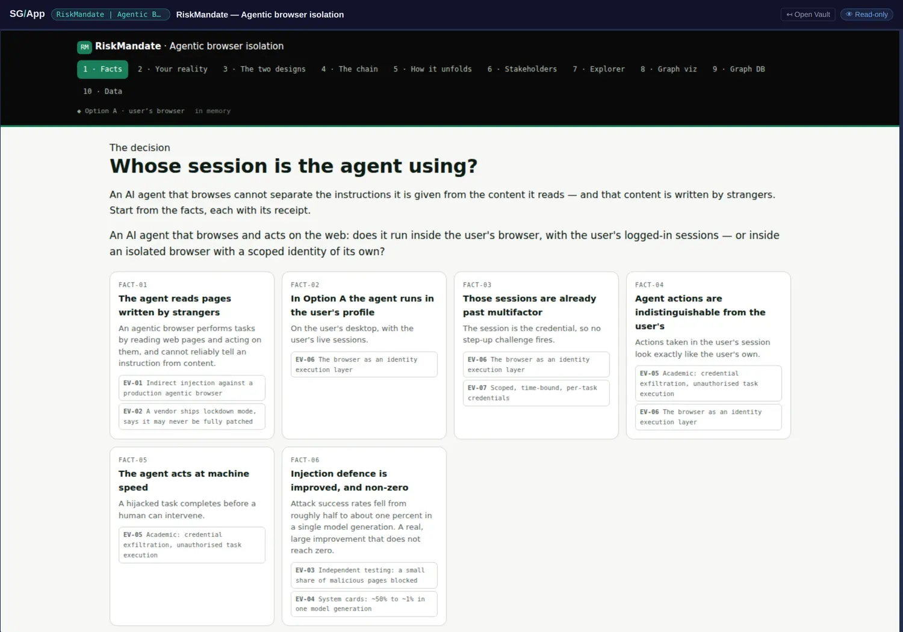
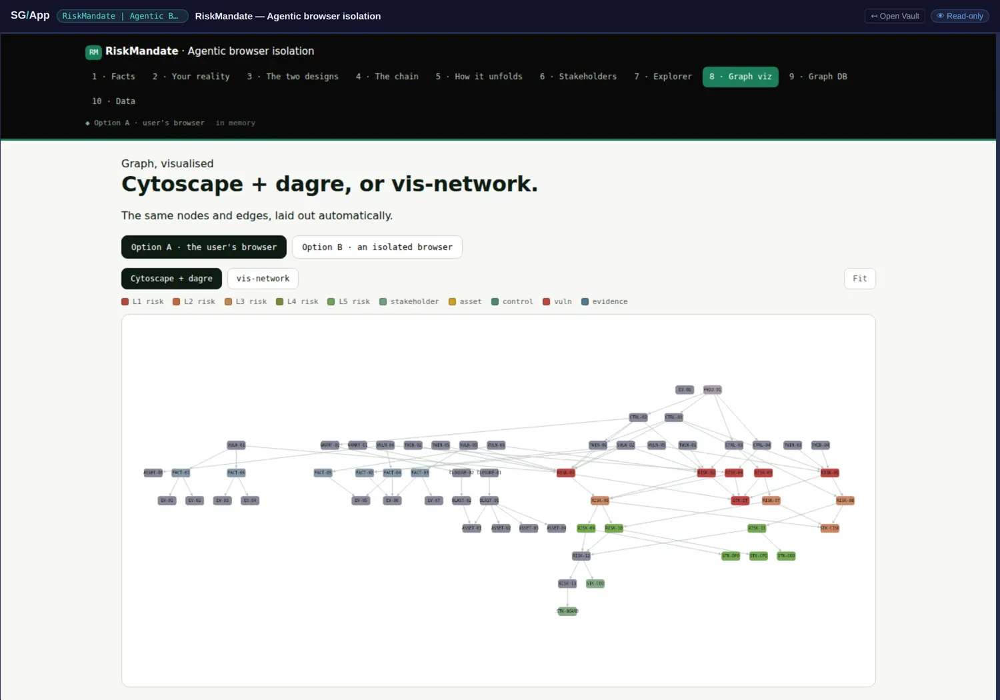
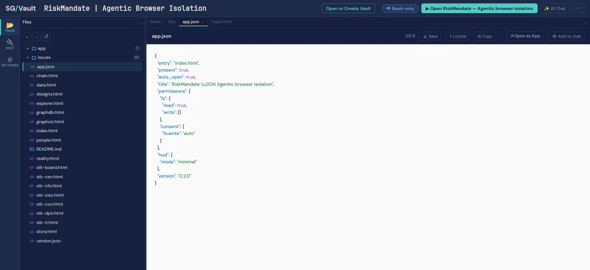

Agentic Browser Isolation, opened
One narrow, consequential question: when an AI agent browses and acts on the web, does it run inside your browser with your logged-in sessions, or inside an isolated browser with a scoped identity of its own? This book asks a version of that in chapter 8 and answers it in 59 nodes. This vault answers it with a register that has owners, cited evidence and an escalation mechanism — the site's own argument, made by somebody else and in far more detail.

The part most worth stealing
It has its own page here, because it is the most transferable idea in the catalogue and it is not really about browsers at all: acceptance-gated escalation. Every altitude has one named owner who holds the risk in their own language; a risk sits pending until that owner accepts it personally; only an accepted risk moves up; and there is no deny button.
The register is data, and the pages are views over it
Seventy JSON files hold the risks, controls, evidence, owners and acceptances, and the app offers them three ways: an explorer, a rendered graph, and a queryable graph database, with RDF tooling vendored into the vault so none of it needs the network. That is the shape argument for vaults holding structured analysis rather than prose — the same encrypted objects serve a narrative page, a stakeholder view and a graph query, because the underlying thing is data and the pages are projections of it.
It is also, incidentally, the answer to a question this book keeps raising and rarely answers with an artefact: documents are projections of graphs. Here are seventeen documents that are demonstrably projections of one graph, in a vault you can open with a published key.

A register that names its sources
The facts link outward: Brave's prompt-injection write-up, an arXiv paper on credential exposure, independent testing. A risk register that cites its evidence is one you can argue with rather than one you must believe, and the difference is the whole distance between an assessment and a document. It is the provenance chain again, arriving from a different direction and at a lower cost: not hashes of retrieved bytes, just honest outward links, which is the version most work can actually afford.
An app that asks for nothing it does not need
app.json declares fs.read: true and fs.write: [] — an empty write list. The footer states the consequence plainly: your changes are device-local, and the vault baseline is never modified. Set beside its siblings, that is one point on a scale the catalogue now spans end to end, and every point on it is declared in the vault rather than configured on a server.

Open it yourself
sgit clone sgit_rk1_92cad4cea8f58c55f59b686c71c935225a1ba7c41ecb6922a8aa570467604f6e:0610gsp9- Chapter 8 gains the fuller treatment of its own question by an independent author, including the vendor-neutral framing: any isolation product is an instance of the control, and the control's own self-created risks go on the register like everything else.
- Chapter 6 (documents are projections of graphs) gains seventeen documents that are demonstrably views over one JSON register.
- The acceptance mechanism is worth a section of its own in the book, and it is the pattern this site has now borrowed for its own decisions page.